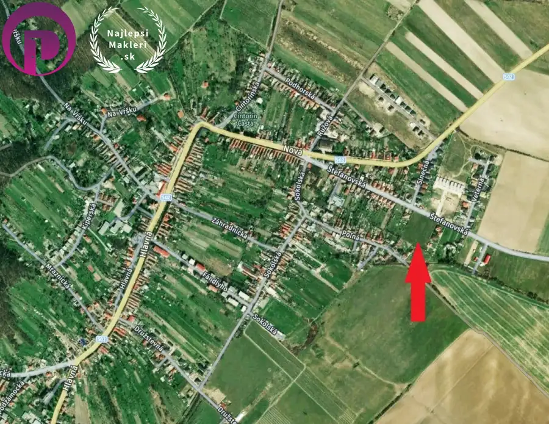
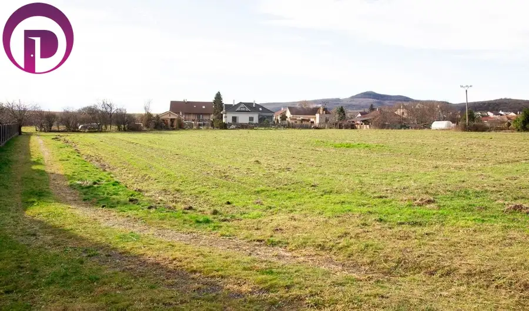
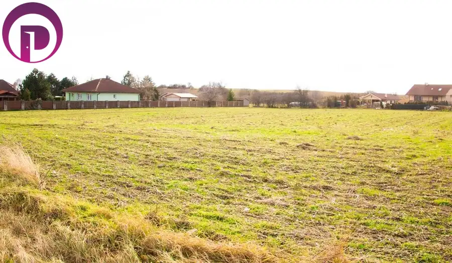
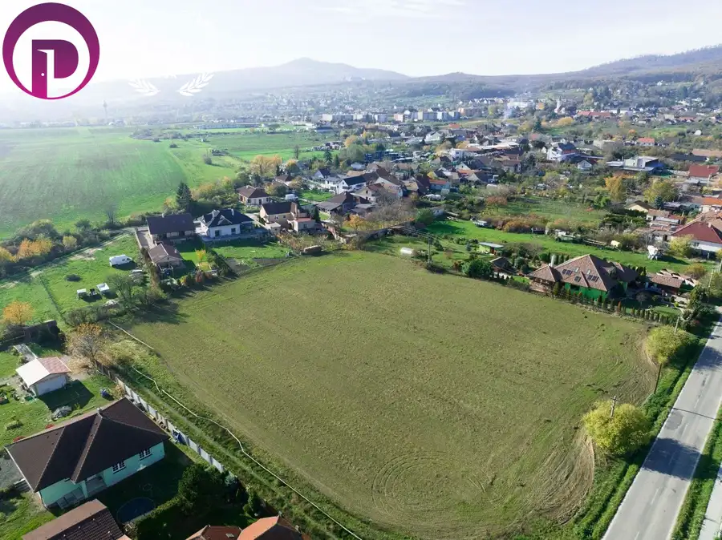
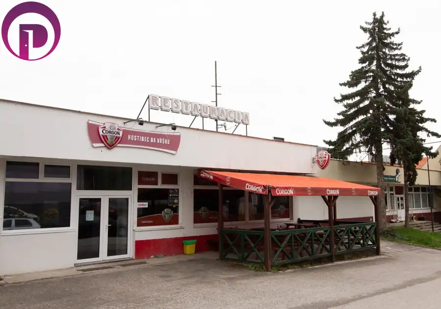
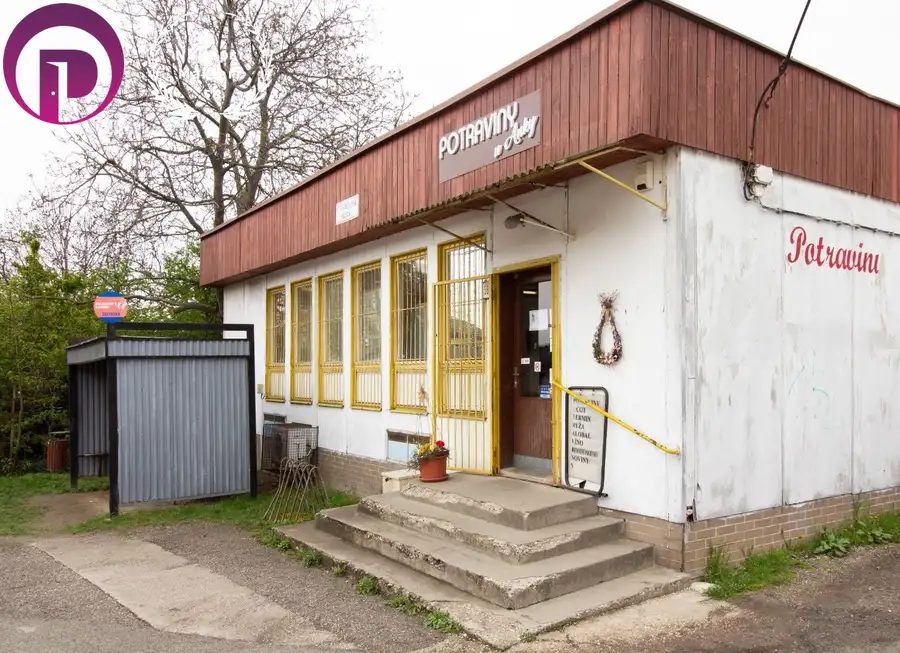

Pozemok, Častá: 4400 m2, výstavba RD, krásny výhľad na Malé Karpaty
Častá






- Plocha4400 m²
- VlastníctvoOsobné
O nehnuteľnosti
Výnimočná ponuka – ROVINATÝ pozemok s krásnym výhľadom na Malé Karpaty a hrad Červený kameňExkluzívne ponúkame na predaj VEĽKORYSÝ SLNEČNÝ pozemok v pokojnej časti obce Častá, s dobrou dostupnosťou do Trnavy aj Bratislavy.✔️ Pozemok ideálneho obdĺžnikového tvaru.✔️ Rozvíjajúca sa časti obce Častá.✔️ IS (prípojka na elektrickú sieť, rozvod plynu, verejný vodovod aj kanalizácia) na hranici pozemku.✔️ Prístup a ohraničenie asfaltovou cestou.✔️ Výborná dopravná dostupnosť do centra obce, ako aj do okolitých miest (Pezinok 15 km, Modra 9 km, Trnava 20 km), vrátane Bratislavy.✔️Možnosť developerského projektu aj individuálnej výstavby.✔️ Dom postavený na tomto pozemku poskytne svojmu majiteľovi pokojné bývanie s výhľadom na Malé Karpaty a zároveň na dosah všetkej občianskej vybavenosti. Technické parametre pozemku:-rovinatý pozemok-optimálny takmer obdĺžnikový tvar (šírka cca 43m, dĺžka cca 101m)-celková plocha pozemku 4 400 m2 -asfaltová prístupová cesta-inžinierske siete na hranici (elektrická prípojka, plynová prípojka, kanalizácia a verejný rozvod vody)-bezbariérový prístup-orientácia JZ-UPI – rozvojový zámer: výstavba RD v existujúcej zástavbe – k nahliadnutiu v RKLOKALITA:+ v blízkosti sa nachádza kompletná občianska vybavenosť: autobusová zástavka - napojenie na Trnavu aj Pezinok, potraviny, pekáreň, pošta, lekáreň, kostol, čerpacia stanicu, ZŠ, MŠ, pizzeria, reštaurácia, tenisové kurty, ...+ Obec a okolie žije čulým kultúrnym a spoločenským životom.+ do centra Bratislavy je autom 25 min.+ obľúbená aj pre aktívny relax v lete ako aj v zime+ hrad Červený kameň nad obcou Obec Častá ležiaca na okraji malých Karpát, sa nachádza v Bratislavskom samosprávnom kraji, v okrese Pezinok, ako súčasť Malokarpatského regiónu, je dynamicky rozvíjajúca sa obec s približne 2 500 obyvateľmi. V neďalekom okolí je mesto Modra a Pezinok, ktoré sú mestami vína, osobností, keramiky, množstva pamiatok. Blízkosť lesov ponúka prechádzky, turistiku a cykloturistiku v početných trasách. CENA: 95,- €/m2Ponúkame kompletný servis pri predaji, kúpe a prenájme nehnuteľností:ŽIADNE ĎALŠIE POPLATKY Všetky štandardné poplatky spojené s prevodom vlastníckych práv na katastrálnom úrade HRADÍME ZA VÁS, pri riešení hypotéky prostredníctvom našej kancelárie hradíme bankové poplatky. NAJVYŠŠIA PRÁVNA OCHRANA Bezpečnosť obchodu GARANTOVANÁ AUTORIZOVANÝMI ZMLUVAMI. Všetky zmluvy a dokumenty sú vypracované našou právnou kanceláriou špecializujúcou sa na realitné právo.POSTARÁME SA O VÁS OD A PO ZPokojne vás prevedieme celým obchodom - od prvej obhliadky až po odovzdanie kľúčov novému majiteľovi. Zabezpečíme BEZPLATNE MARKETING šitý na mieru vašej nehnuteľnosti. Bezplatne získate DAŇOVÉ PORADENSTVO spojené s predajom nehnuteľnosti. A pomôžeme vám nájsť nový domov.AJ MAKLÉRA MÔŽETE MAŤ RADI :-) KONTAKTIng. Mgr. Helena Prelecová0948 061 874prelecova@najlepsimakleri.sk www.NajlepsiMakleri.sk© Copyright NajlepšíMakléri.sk, s.r.o. – Fotografie, obrázky, videá a texty sú autorským dielom a majetkom spoločnosti NajlepšíMakléri.sk, s.r.o
Parametre
- Druh
- Pozemok pre rodinné domy
- Dátum zverejnenia
- 25. 02. 2025
- Dĺžka pozemku
- 101
- Elektrina
- Na pozemku, Na pozemku - 230 V, Na pozemku - 400 V
- Funkčné využitie
- Výstavba rodinného domu
- Odpadové vody
- Pri pozemku - Kanalizácia
- Plocha pozemku
- 4400 m²
- Plyn
- Pri pozemku
- Pripravenosť k výstavbe
- Vydané územné rozhodnutie
- Prístupová komunikácia
- Asfaltová
- Terén pozemku
- Rovinatý
- Typ
- Predaj
- Vlastníctvo
- Osobné
- Voda
- Pri pozemku, Pri pozemku - Verejný vodovod
- Voľnočasové aktivity
- Turistika, Cykloturistika
- Územie
- Extravilán
- Šírka pozemku
- 43